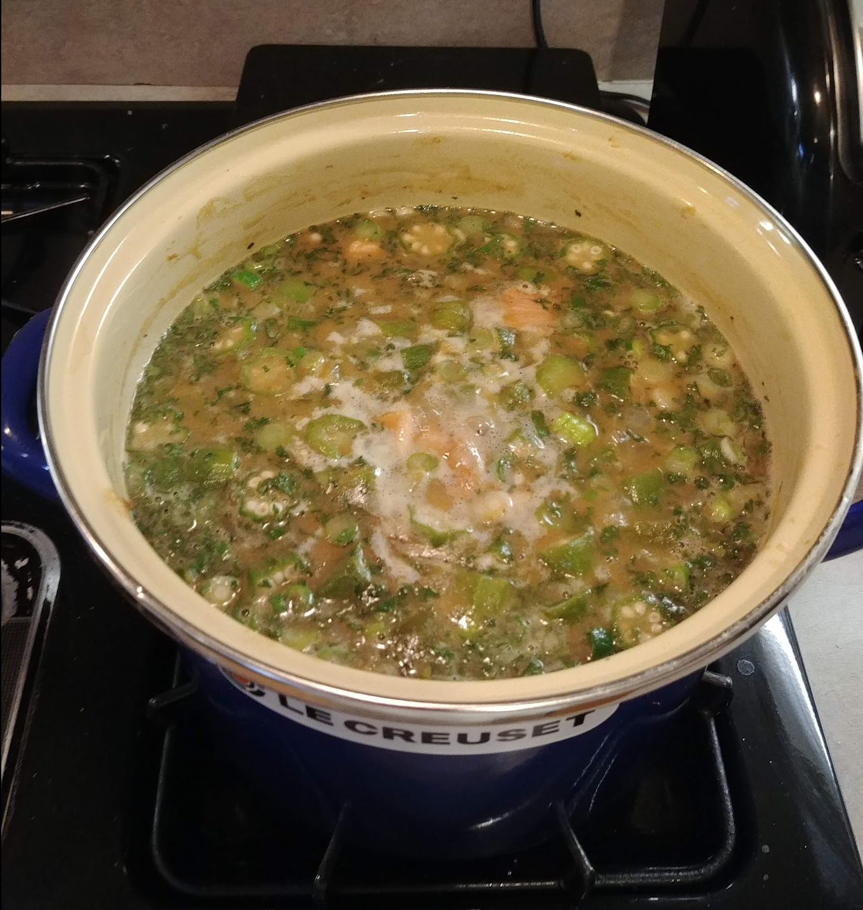

Seafood Gumbo

Ingredients
- 2 lb shrimp, peeled
- 1 lb crawfish, peeled
- 1 lb lump crabmeat
- 1 qt oysters and liquid
- 2 qt water
- 1 C oil
- 1 C flour
- 2 onions, chopped
- 1 bell pepper, chopped
- 1 rib celery, chopped
- 1 bag frozen okra (optional)
- 5 green onions, chopped
- 3-4 tsp salt
- 1 tsp black pepper
- 1-2 tsp white pepper
- ½ tsp cayenne pepper
- 1 tsp garlic powder
- ½ tsp thyme
- 3 tsp parsley
- 2 tsp Tabasco
Directions
- Make Roux: Cook oil and flour until a dark brown roux forms. Remove from heat.
- Add Trinity: Stir in onions, bell pepper, and celery, mixing constantly until the roux cools slightly.
- Simmer Base: In an 8-qt stock pot, heat water and add garlic powder, oyster juice, and the roux. Bring to a boil, then simmer 45 minutes. (Add sliced okra at this stage if using.)
- Add Seafood: Add seafood and seasonings; simmer 15 minutes.
- Finish: Stir in green onions, parsley, and Tabasco and simmer 10 minutes more.
- Serve: Serve over rice, topped with gumbo filé.
The Gumbo Page
Michael Fritsche
mbf@fritsche.org